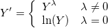
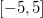
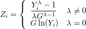
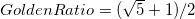
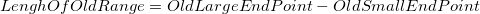
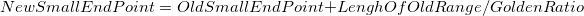
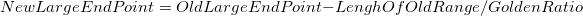

は
はOrigin では、データが正規分布に従うように変換する手法として、 Box-Cox変換、Johnson変換、Yeo-Johnson変換の3種類を提供しています。
Box-Cox変換とYeo-Johnson変換はともにべき変換です。違いは、Box-Cox変換は全て正のデータにしか適用ない一方、Yeo-Johnson変換はどんなデータにも制限なく適用できる点にあります。Johnson変換はJohnson分布システムを使用するが、元のデータの正規性をチェックしてデータを変換することができます。
Box-Cox変換はべき変換の一種で、正のデータに対してのみ適用できます。Box-Cox変換の結果は次のように定式化されます。

ここで、は

の範囲にあります。Originはの範囲で最適を推定し、変換されたデータの最小標準偏差が最小となる推最適を選択します。異なる間で標準偏差を比較できるように、標準偏差を計算する前に、変換されたデータの標準化が必要です。データの標準化には以下の式を用います。

ここで、 はデータの場合、
はデータの場合、 は元データの幾何平均です。
は元データの幾何平均です。 は標準偏差の計算に使用します。
は標準偏差の計算に使用します。
最適化の詳細なステップ（黄金分割探索（Golden Section Search Algorithm））は次のとおりです。




に対して 値と標準偏差を計算 は最終的な範囲の中点です。標準偏差を計算する方法
Originはまた、最適を0.5単位に丸めるか、つまり最適値を得た後、最も近い値（0.5の倍数）に丸めるかどうかのオプションも提供しています。
Johnson分布の3つの分布族には、SB、SL、SUNがあり、それぞれ有界(SB)、対数正規(SL)、無制限(SU)変数のJohnson分布族です。これら3つの族の変換関数の式は次のとおりです。
![Y'=\left\{
\begin{array}{ll}
SB = \gamma + \eta \ln\frac{Y-\epsilon}{\lambda+\epsilon-Y} &\eta, \lambda > 0, -\infty < \gamma < \infty, -\infty < \epsilon < \infty, \epsilon < Y < \epsilon + \lambda\cr
SL = \gamma + \eta \ln(Y-\epsilon) & \eta > 0, -\infty < \gamma < \infty, -\infty < \epsilon < \infty, \epsilon < Y\cr
SU = \gamma + \eta \sinh^{-1}\frac{Y-\epsilon}{\lambda} &\eta, \lambda > 0, -\infty < \gamma < \infty, -\infty < \epsilon < \infty, -\infty < Y < \infty, \sinh^{-1}(x) = \ln(x+\sqrt{1+x^2})
\end{array}
\right.](../images/Algorithm_DT/math-3acdc53d7b1ddd697b78a44986a76361.png "Y'=\left\{
\begin{array}{ll}
SB = \gamma + \eta \ln\frac{Y-\epsilon}{\lambda+\epsilon-Y} &\eta, \lambda > 0, -\infty < \gamma < \infty, -\infty < \epsilon < \infty, \epsilon < Y < \epsilon + \lambda\cr
SL = \gamma + \eta \ln(Y-\epsilon) & \eta > 0, -\infty < \gamma < \infty, -\infty < \epsilon < \infty, \epsilon < Y\cr
SU = \gamma + \eta \sinh^{-1}\frac{Y-\epsilon}{\lambda} &\eta, \lambda > 0, -\infty < \gamma < \infty, -\infty < \epsilon < \infty, -\infty < Y < \infty, \sinh^{-1}(x) = \ln(x+\sqrt{1+x^2})
\end{array}
\right.")
このアルゴリズムの目的は、3つのJohnson族から最適な変換関数を選択することです。「最良」とは、
最適な変換関数を選択するための一般的な流れは次のとおりです。
Yeo-Johnson変換は、別の種類のべき変換です。 Box-Cox変換とは異なり、Yeo-Johnson変換は正、負、ゼロの任意のデータに対して適用できます。Yeo-Johnson変換の結果は次のように定式化されます。
^\lambda - 1}{\lambda} &\lambda \neq 0,Y\ge0\cr
\ln(Y+1) &\lambda = 0,Y\ge0\cr
-\frac{(-Y+1)^{2-\lambda}-1}{2-\lambda} &\lambda \neq 2,Y < 0\cr
-\ln(-Y+1) & \lambda = 2,Y < 0
\end{array}
\right.")
ここで、もの範囲に制限されます。
OriginはBox-Cox変換と同じアルゴリズムを用いて最適なを推定します。しかし、このアルゴリズムは元のデータの幾何平均を計算する必要があり、元のデータに負のデータまたはゼロが含まれている場合にうまくいきません。そのため、この最適化を正でないデータに対して適用できるように、このアルゴリズムでは元のデータに正の値を足すことで、全て正の値を持つ新しいデータを取得します。